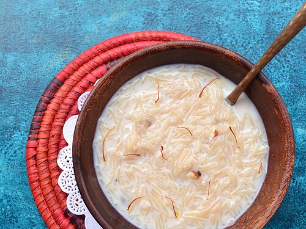

Shemiya

Shemiya is a traditional dish from the Middle East. It is made with vermicelli noodles, which are toasted until golden brown, then cooked with broth and spices. Shemiya is often served with meat or vegetables, and is a popular dish for special occasions.
Ingredients:
- 1 cup vermicelli noodles
- 2 cups chicken or vegetable broth
- 1 onion, chopped
- 2 cloves garlic, minced
- 1 tsp cumin
- 1 tsp coriander
- 1/2 tsp turmeric
- 1/4 tsp cinnamon
- 1/4 tsp cayenne pepper
- Salt and pepper to taste
- 2 tbsp olive oil
- Fresh parsley for garnish
- 1/4 cup pine nuts
Instructions:
- Heat the olive oil in a large skillet over medium heat. Add the vermicelli noodles and cook, stirring frequently, until golden brown.
- Add the onion and garlic to the skillet and cook until softened.
- Add the spices to the skillet and cook for another minute.
- Pour in the broth and bring to a boil. Reduce heat and simmer for 10 minutes, or until the noodles are tender.
- While the noodles are cooking, toast the pine nuts in a dry skillet until golden brown.
- Once the noodles are cooked, remove from heat and let sit for 5 minutes.
- Fluff the noodles with a fork and garnish with fresh parsley and toasted pine nuts.
- Serve hot and enjoy